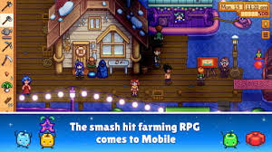
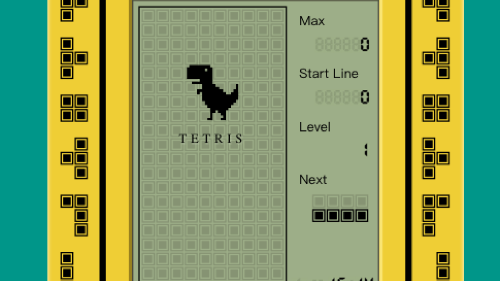

A mobile game is a game played on a feature phone, smartphone/tablet, smartwatch, PDA, portable media player
or
graphing calculator. The earliest known game on a mobile phone was a Tetris variant on the Hagenuk MT-2000
device from 1994

The oldest mobile game
In 1997, Nokia launched the very successful Snake.[3] Snake (and its variants), that was preinstalled in most
mobile devices manufactured by Nokia, has since become one of the most played games and is found on more
than
350 million devices worldwide.[4] A variant of the Snake game for the Nokia 6110, using the infrared port,
was
also the first two-player game for mobile phones.
Today, mobile games are usually downloaded from an app store as well as from mobile operator's portals, but
in
some cases are also preloaded in the handheld devices by the OEM or by the mobile operator when purchased,
via
infrared connection, Bluetooth, or memory card, or side loaded onto the handset with a cable.
Downloadable mobile games were first commercialised in Japan circa the launch of NTT DoCoMo's I-mode
platform in
1999, and by the early 2000s were available through a variety of platforms throughout Asia, Europe, North
America and ultimately most territories where modern carrier networks and handsets were available by the
mid-2000s. However, mobile games distributed by mobile operators and third party portals (channels initially
developed to monetise downloadable ringtones, wallpapers and other small pieces of content using premium SMS
or
direct carrier charges as a billing mechanism) remained a marginal form of gaming until Apple's iOS App
Store
was launched in 2008. As the first mobile content marketplace operated directly by a mobile platform holder,
the
App Store significantly changed the consumer behaviour and quickly broadened the market for mobile games, as
almost every smartphone owner started to download mobile apps.[5]

which is the best mobile game in the world
The best game is Snowboarding at high speed has never been as relaxing as it is in Alto's Adventure. Very
simple
one-touch controls let you guide Alto (and several other unlockable characters) down the mountain while
getting
big air, grinding edges and performing multiple backflips.
Beautiful endless mountain scenery, amazing day-to-night transitions and a mesmerizing soundtrack (you
should
definitely wear headphones) make this is a must have on any device.
Read our story Best phone for gaming in 2019: Razer 2 vs. Asus ROG, Nubia Red Magic Mars, Xiaomi Black
Shark.
PlayerUnknown Battlegrounds (PUBG) for mobile is a free survival shooter that lets you experience what
it's like
to be dropped on an island with 99 other players to see who will ultimately survive. But what's great
about the
mobile version of this extremely popular game on PCs is that it seems to run even better on a
smartphone. In
other words, this is one heck of a port.
Just like the original, you'll parachute in, loot buildings to gear up, and do your best to survive all
the way
to the end. You can go it solo, or create a squad of up to four players if you want to try out a team
effort. Be
careful though, this game is incredibly addicting.
The sequel to Alto's Adventure is called Alto's Odyssey and -- while the original is still amazing -- the
follow-on might be even better. You get a new trick to add to your arsenal with wall rides, making it
possible
to have more control over your combos. There are new environments to explore and you can you play a Zen
Mode
that lets you just take in the sights and sounds of the game.
If there is any game you download from this list, Alto's Odyssey is extremely easy to recommend.
REVIEWS
REVIEWS ABOUT ALTO ADVENTURE:
Endless runners are two-a-penny these days. From Madagascar penguins to treasure-hunting adventurers, it
seems
everyone has one. But rarely are they as beautiful or as atmospheric as Alto’s Adventure. The basic premise
is
the same as the rest: stay on the path for as long as possible, collect objects, avoid obstacles and
complete
goals as they’re set.
But the path in this case is a snowy mountain, and the objects you need to collect are runaway llamas. There
are
coins to collect too, and points to rack up, but your main objective is to round up the runaway llamas while
trying to stay upright on your snowboard. The surrounding environment is both beautiful and deadly. Weather
changes as you move, bathing you in sunshine one minute, in a snowfall and worse the next. And the day time
shifts too – while the course is reasonably easy to navigate in the midday sun, it’s more treacherous at
night.
Rocks appear from nowhere, chasms seems wider. You can also throw a few tricks in there to help boost your
speed
– check out the length of your scarf as you back flip – and your points total. That extra speed boost is
handy
for making it over some of the wider chasms and ravines. Fall in and your run is done. Points can also be
earned
by grinding on opportune bits of scenery, such as bunting.
Looks-wise, it’s a bit Monument Valley, so you’ll spend half your time looking at the beautiful sunset or
the
sun-drenched mountainside rather than paying attention to the task at hand. It’s further proof, if it was
needed, that mobile games can hold their own aesthetically.
REVIEWS ABOUT PUBG:
I want to share my personal experience with this game this game is very nice for playing but it bad effect on
the
mind of the game player it make become a player mad
REVIEWS ABOUT ALTO ODESSEY:
Alto’s Odyssey is the successor to the 2015 smash hit Alto’s Adventure.
Like its predecessor, Odyssey is a side-scrolling game, but this time, the titular character Alto is
snowboarding through a desert.

 Just like the original, you'll parachute in, loot buildings to gear up, and do your best to survive all
the way
to the end. You can go it solo, or create a squad of up to four players if you want to try out a team
effort. Be
careful though, this game is incredibly addicting.
Just like the original, you'll parachute in, loot buildings to gear up, and do your best to survive all
the way
to the end. You can go it solo, or create a squad of up to four players if you want to try out a team
effort. Be
careful though, this game is incredibly addicting.